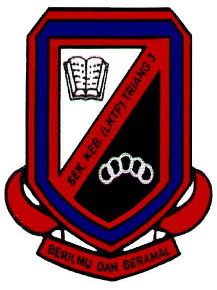

E D U C A T I O N
MY EDUCATION
Never stop learning, because life never stops teaching!
1. TABIKA KEMAS LADANG TRIANG 2
Tabika Kemas Ladang Triang 2.- When I was 5 and 6 years old, I studied here. I still remember the day where I used to hate and cried a lot at school.
2. SEKOLAH KEBANGSAAN TRIANG 3

Sekolah Kebangsaan Triang 3.- I studied in SK Seri Chempaka for 6 years from 7 years old to 12 years old.
3. SEKOLAH MENENGAH KEBANGSAAN SERI BERA
Sekolah Menengah Kebangsaan Seri Bera.- I can tell that my secondary school, is my hardest good bye. I made so many memories and friends there for 5 years.
4. UiTM MACHANG

- After school, I further my study at Universiti Teknologi Mara (UiTM) Kelantan, Machang branch in Information Management course for five semester. This year will be my last semester as a Machangster's.